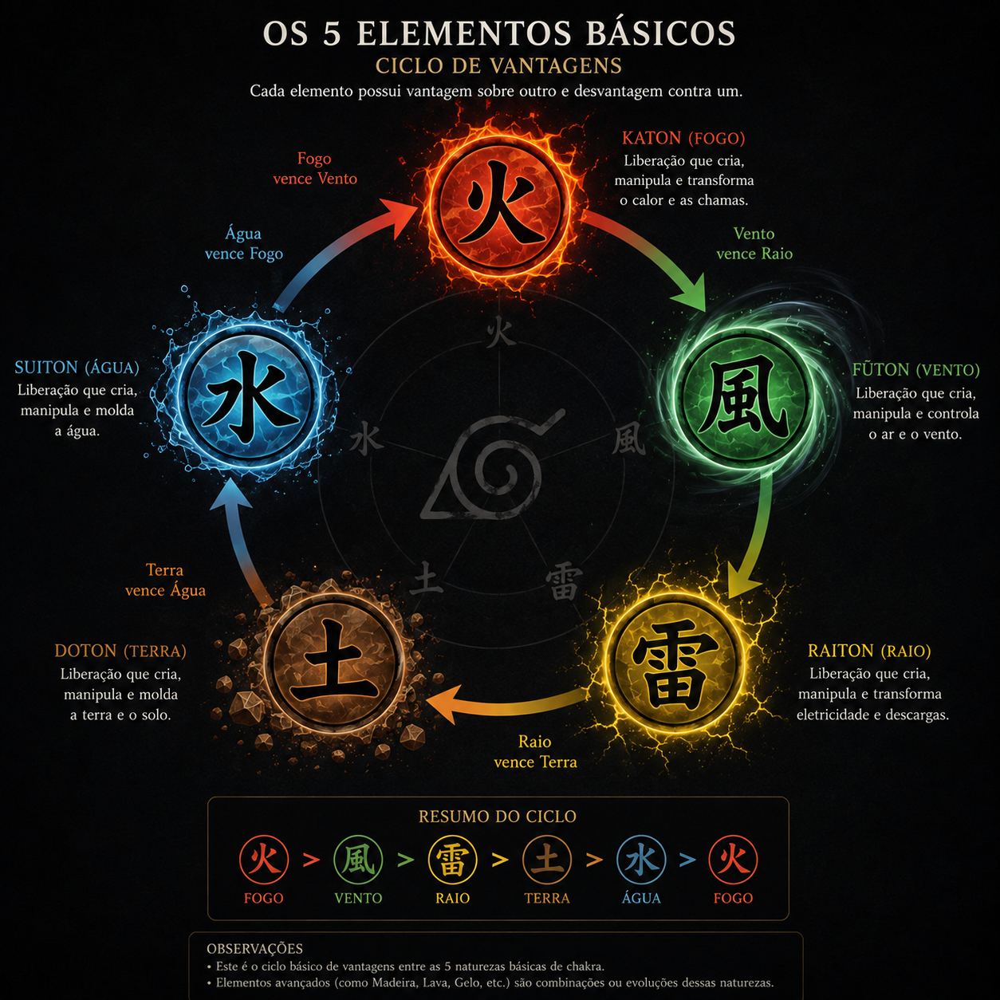
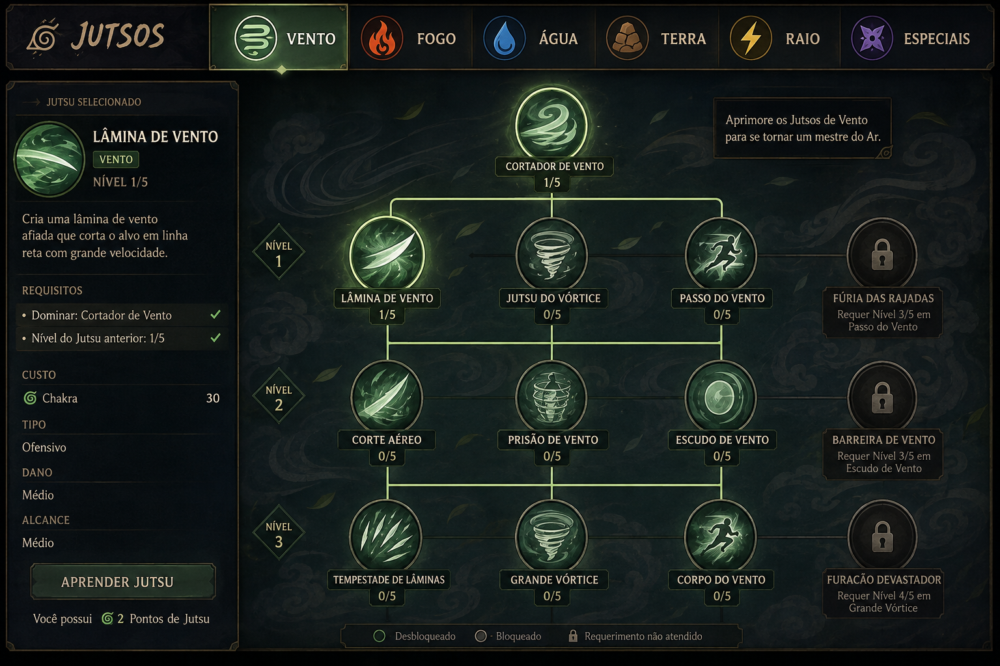

Base do Personagem
Resumo da base
A base do personagem é composta por nível de experiência, atributos, chakra, elemento, classes e skills.
Ao matar monstros, o jogador recebe experiência. Ao subir de nível, ganha pontos para distribuir nos atributos, além de aumentar a vida máxima e o chakra máximo.
Definições da Base
Glossário técnico
- Atributos: são os valores base do personagem e definem dano, vida, defesa, defesa elemental, inteligência e agilidade.
- Chakra: é a energia vital usada para ativar jutsus, técnicas especiais e habilidades que consomem recurso.
- Elementos: são as naturezas dos jutsus. Fogo causa dano contínuo, água controla fluxo e pressão, vento corta e empurra, terra protege e prende, e raio acelera e perfura.
- Skills: são pontos de treinamento que representam o domínio do personagem em um estilo de combate específico.
- Taijutsu: é a skill de combate corporal. Serve para aumentar ataque físico, dano corpo a corpo, pressão em curta distância e eficiência em golpes diretos.
- Ninjutsu: é a skill de técnicas e jutsus. Serve para aumentar poder, dano e eficiência das habilidades que gastam chakra.
- Sword: é a skill de espadas. Serve para aumentar o desempenho com armas de lâmina, cortes, alcance médio e ataques precisos.
- Club: é a skill de armas pesadas. Serve para aumentar dano bruto, impacto e eficiência em golpes lentos, porém fortes.
- Axe: é a skill de machados. Serve para aumentar força de impacto, quebra de defesa e dano em ataques mais agressivos.
- Bukijutsu: é a skill de armas. Serve para aumentar o dano e a eficiência com armas de combate direto e também com armas à distância, como kunais, shurikens, arcos e bestas.
Atributos do personagem
- O personagem ganha 1 ponto por level para distribuir nos atributos.
- Força: aumenta o dano físico e a potência de ataques corporais e de armas.
- Vitalidade: aumenta a vida máxima e a capacidade de aguentar dano por mais tempo.
- Defesa: reduz o dano físico recebido e melhora a resistência contra golpes diretos.
- Defesa Elemental: reduz o dano recebido de jutsus e ataques elementais.
- Inteligência: aumenta a eficiência com chakra, técnicas e o desempenho de jutsus mais avançados.
- Agilidade: aumenta velocidade, mobilidade, reação, chance de esquiva e capacidade de se reposicionar em combate.
Chakra, Elementos e Jutsus
Chakra
Reserva, regeneração, custo por técnica, uso e defesa elemental.
Elementos
Katon, Suiton, Raiton, Doton e Fuuton como trilhas de progressão e árvores de habilidades.
Jutsus equipados
A spell bar deve ter apenas 8 jutsus para forçar escolhas e preparação.
Domínio
Jutsus evoluem por uso, com crescimento individual por técnica e requisitos próprios.

Requisitos de aprendizado
- Level mínimo.
- Quantidade mínima de chakra.
- Elemento e/ou jutsu anterior aprendido.
- Missão específica, mestre NPC ou pergaminho.
- Nível x do jutsu anterior quando a árvore exigir progressão em cadeia.
Progressão de elementos e jutsus
- Para liberar um novo elemento, o jogador precisa aprender na ordem correta e cumprir os requisitos da progressão.
- Alguns elementos e jutsus dependem de outros elementos já dominados antes de serem ensinados.
- Jutsus novos também possuem requisitos próprios, como nível, chakra, técnica anterior e, em alguns casos, domínio de outro elemento.
- Exemplo: para aprender Rasengan Shuriken, o jogador precisa aprender o Rasengan primeiro e depois dominar o elemento Vento.
- Cada elemento começa com 5 jutsus disponíveis.
- Alguns jutsus têm versões melhoradas em níveis, como Bola de Fogo Nv 1, Nv 2 e Nv 3, aumentando dano e alcance, mas também o custo de chakra.

Modo de combate
- Defensivo: menor custo de chakra e menor dano.
- Medium: equilíbrio entre custo de chakra e dano.
- Full ofensivo: maior dano e maior custo de chakra.
- O modo de combate define o custo e o dano das técnicas de chakra, ajustando o personagem para mais pressão ou mais economia.
Level e Progressão
Marcos sugeridos
- Level 20: Genin.
- Level 100: Chunin.
- Level 250: Jounin.
- Level 500: Ninja Elite.
- ANBU: promoção especial por missão e perfil de elite.
Progressão
Não existe cap de level. Sempre deve haver próximo objetivo.
Mundo social
Rank e símbolo no cliente ajudam a leitura em party, PvP e cidade.
Morte
Perda de EXP, skill e mochila, com possíveis consequências de reputação.
Especialização
A build ideal é resultado de escolhas, treino e uso repetido.
Bençãos
Benção Protetora
A Benção Protetora reduz a perda de EXP e skill ao morrer.
- Nível 1: gratuito, com 20% de redução na perda de EXP e skill, e pode ser adquirido com um NPC no templo.
- Nível 2: desbloqueado por missões, com 50% de redução na perda de EXP e skill.
- Nível 3: desbloqueado por missões, com 80% de redução na perda de EXP e skill.
Catálogo de Jutsus
Lista completa baseada na planilha enviada, com nome, nome japonês e elemento para consulta rápida.
| Jutsu | Nome japonês | Elemento | Tipo |
|---|---|---|---|
| Grande Bola de Fogo | Katon: Gōkakyū no Jutsu | 🔥 Fogo | Katon |
| Flor da Fênix | Katon: Hōsenka no Jutsu | 🔥 Fogo | Katon |
| Dragão de Fogo | Katon: Ryūka no Jutsu | 🔥 Fogo | Katon |
| Grande Chama | Katon: Gōka Mekkyaku | 🔥 Fogo | Katon |
| Grande Aniquilação de Fogo | Katon: Gōka Messhitsu | 🔥 Fogo | Katon |
| Bala de Fogo do Dragão | Katon: Karyū Endan | 🔥 Fogo | Katon |
| Cinzas Ardentes | Katon: Haisekishō | 🔥 Fogo | Katon |
| Névoa Flamejante | Katon: Kasumi Enbu no Jutsu | 🔥 Fogo | Katon |
| Chama do Dragão Supremo | Katon: Gōryūka no Jutsu | 🔥 Fogo | Katon |
| Corrida de Fogo | Katon: Endan | 🔥 Fogo | Katon |
| Óleo de Sapo Flamejante | Katon: Gamayu Endan | 🔥 Fogo | Katon / cooperação |
| Chidori | Chidori | ⚡ Raio | Raiton |
| Raikiri | Raikiri | ⚡ Raio | Raiton |
| Chidori Senbon | Chidori Senbon | ⚡ Raio | Raiton |
| Chidori Nagashi | Chidori Nagashi | ⚡ Raio | Raiton |
| Lança Afiada de Chidori | Chidori Eisō | ⚡ Raio | Raiton |
| Kirin | Kirin | ⚡ Raio | Raiton |
| Pantera Negra | Raiton: Kuropansa | ⚡ Raio | Raiton |
| Falsa Escuridão | Raiton: Gian | ⚡ Raio | Raiton |
| Onda de Inspiração | Raiton: Kangekiha | ⚡ Raio | Raiton |
| Armadura de Liberação de Relâmpago | Raiton no Yoroi | ⚡ Raio | Raiton / Nintaijutsu |
| Lariat | Rariatto | ⚡ Raio | Nintaijutsu |
| Rasenshuriken | Fūton: Rasenshuriken | 🌪️ Vento | Fūton |
| Grande Ruptura | Fūton: Daitoppa | 🌪️ Vento | Fūton |
| Onda de Vácuo | Fūton: Shinkūha | 🌪️ Vento | Fūton |
| Grande Esfera de Vácuo | Fūton: Shinkūgyoku | 🌪️ Vento | Fūton |
| Lâmina de Vento | Fūton: Kazekiri no Jutsu | 🌪️ Vento | Fūton |
| Bala de Ar Comprimido | Fūton: Renkūdan | 🌪️ Vento | Fūton |
| Pressão Devastadora | Fūton: Atsugai | 🌪️ Vento | Fūton |
| Rasengan de Vento | Fūton: Rasengan | 🌪️ Vento | Fūton |
| Dragão de Água | Suiton: Suiryūdan no Jutsu | 💧 Água | Suiton |
| Parede de Água | Suiton: Suijinheki | 💧 Água | Suiton |
| Grande Cachoeira | Suiton: Daibakufu no Jutsu | 💧 Água | Suiton |
| Prisão de Água | Suiton: Suirō no Jutsu | 💧 Água | Suiton |
| Tubarão de Água | Suiton: Suikōdan no Jutsu | 💧 Água | Suiton |
| Grande Tubarão de Água | Suiton: Daikōdan no Jutsu | 💧 Água | Suiton |
| Explosão de Água Colisora | Suiton: Bakusui Shōha | 💧 Água | Suiton |
| Grande Explosão de Água Colisora | Suiton: Dai Bakusui Shōha | 💧 Água | Suiton |
| Projétil do Dragão de Água | Suiton: Suiryūdan no Jutsu | 💧 Água | Suiton |
| Formação da Parede de Água | Suiton: Suijinheki | 💧 Água | Suiton |
| Cinco Tubarões Famintos | Suiton: Goshokuzame | 💧 Água | Suiton |
| Chicote de Água | Suiton: Suiben | 💧 Água | Suiton |
| Parede de Terra | Doton: Doryūheki | 🪨 Terra | Doton |
| Pântano do Submundo | Doton: Yomi Numa | 🪨 Terra | Doton |
| Decapitação Dupla | Doton: Shinjū Zanshu no Jutsu | 🪨 Terra | Doton |
| Mausoléu de Terra | Doton: Doryū Jōheki | 🪨 Terra | Doton |
| Lanças de Terra | Doton: Domu | 🪨 Terra | Doton |
| Núcleo Móvel da Terra | Doton: Chidōkaku | 🪨 Terra | Doton |
| Grande Núcleo Móvel da Terra | Doton: Dai Chidōkaku | 🪨 Terra | Doton |
| Dragão de Terra | Doton: Doryūdan | 🪨 Terra | Doton |
| Prisão de Terra | Doton Kekkai: Dorō Dōmu | 🪨 Terra | Doton / Barreira |
| Técnica da Rocha Leve | Doton: Keijūgan no Jutsu | 🪨 Terra | Doton |
| Técnica da Rocha Pesada | Doton: Kajūgan no Jutsu | 🪨 Terra | Doton |
| Liberação de Madeira: Natividade de um Mundo de Árvores | Mokuton Hijutsu: Jukai Kōtan | 💧 Água🪨 Terra | Mokuton / Kekkei Genkai |
| Liberação de Madeira: Dragão de Madeira | Mokuton: Mokuryū no Jutsu | 💧 Água🪨 Terra | Mokuton / Kekkei Genkai |
| Liberação de Madeira: Golem de Madeira | Mokuton: Mokujin no Jutsu | 💧 Água🪨 Terra | Mokuton / Kekkei Genkai |
| Liberação de Madeira: Clone de Madeira | Mokuton: Moku Bunshin no Jutsu | 💧 Água🪨 Terra | Mokuton / Kekkei Genkai |
| Advento de um Mundo de Árvores Florescentes | Mokuton: Kajukai Kōrin | 💧 Água🪨 Terra | Mokuton / Kekkei Genkai |
| Espelhos Demoníacos de Cristais de Gelo | Makyō Hyōshō | 💧 Água🌪️ Vento | Hyōton / Kekkei Genkai |
| Mil Agulhas de Água da Morte | Sensatsu Suishō | 💧 Água🌪️ Vento | Hyōton / Kekkei Genkai |
| Liberação de Lava: Cal Virgem | Yōton: Sekkaigyō no Jutsu | 🔥 Fogo🪨 Terra | Yōton / Kekkei Genkai |
| Liberação de Lava: Rocha Derretida | Yōton: Yōkai no Jutsu | 🔥 Fogo🪨 Terra | Yōton / Kekkei Genkai |
| Liberação de Ebulição: Força Inigualável | Futton: Kairiki Musō | 💧 Água🔥 Fogo | Futton / Kekkei Genkai |
| Liberação de Tempestade: Circo de Laser | Ranton: Reizā Sākasu | 💧 Água⚡ Raio | Ranton / Kekkei Genkai |
| Liberação de Explosão: Punho de Mina Terrestre | Bakuton: Jiraiken | 🪨 Terra⚡ Raio | Bakuton / Kekkei Genkai |
| Liberação de Poeira: Desmantelamento do Mundo Primitivo | Jinton: Genkai Hakuri no Jutsu | 🔥 Fogo🌪️ Vento🪨 Terra | Jinton / Kekkei Tōta |
| Rasengan | Rasengan | — | Ninjutsu / sem natureza |
| Grande Bola Rasengan | Ōdama Rasengan | — | Ninjutsu / sem natureza |
| Ultra-Grande Bola Rasengan | Chō Ōdama Rasengan | — | Ninjutsu / sem natureza |
| Rasengan Planetário | Wakusei Rasengan | — | Ninjutsu / sem natureza |
| Rasengan de Desaparecimento | Vanishing Rasengan | ⚡ Raio | Raiton / Rasengan |
| Clone das Sombras | Kage Bunshin no Jutsu | — | Bunshinjutsu |
| Múltiplos Clones das Sombras | Tajū Kage Bunshin no Jutsu | — | Bunshinjutsu / Kinjutsu |
| Clone | Bunshin no Jutsu | — | Jutsu básico |
| Transformação | Henge no Jutsu | — | Jutsu básico |
| Substituição | Kawarimi no Jutsu | — | Jutsu básico |
| Deslocamento Instantâneo | Shunshin no Jutsu | — | Ninjutsu |
| Invocação | Kuchiyose no Jutsu | — | Ninjutsu de invocação |
| Invocação: Reencarnação do Mundo Impuro | Kuchiyose: Edo Tensei | — | Kinjutsu / Invocação |
| Deus Voador do Trovão | Hiraishin no Jutsu | — | Ninjutsu Espaço-Tempo |
| Deus Voador do Trovão: Segunda Etapa | Hiraishin: Ni no Dan | — | Ninjutsu Espaço-Tempo |
| Kamui | Kamui | — | Dōjutsu / Espaço-Tempo |
| Kamui Raikiri | Kamui Raikiri | ⚡ Raio | Dōjutsu + Raiton |
| Amenotejikara | Amenotejikara | — | Dōjutsu / Espaço-Tempo |
| Amaterasu | Amaterasu | 🔥 Fogo | Dōjutsu / Enton |
| Kagutsuchi | Enton: Kagutsuchi | 🔥 Fogo | Enton / Dōjutsu |
| Tsukuyomi | Tsukuyomi | — | Genjutsu / Dōjutsu |
| Kotoamatsukami | Kotoamatsukami | — | Genjutsu / Dōjutsu |
| Izanagi | Izanagi | ☯ Yin–Yang | Dōjutsu / Kinjutsu |
| Izanami | Izanami | — | Dōjutsu / Kinjutsu |
| Susanoo | Susanoo | — | Dōjutsu |
| Chibaku Tensei | Chibaku Tensei | — | Dōjutsu / Rinnegan |
| Shinra Tensei | Shinra Tensei | — | Dōjutsu / Rinnegan |
| Banshō Ten'in | Banshō Ten'in | — | Dōjutsu / Rinnegan |
| Caminho Preta: Absorção | Fūjutsu Kyūin | — | Dōjutsu / Absorção |
| Técnica da Reencarnação Rinne | Gedō: Rinne Tensei no Jutsu | — | Dōjutsu / Kinjutsu |
| Oitenta Deuses Ataque de Vácuo | Yasogami Kūgeki | — | Taijutsu / Kekkei Mōra |
| Ossos de Cinzas Assassinos | Tomogoroshi no Haikotsu | — | Kekkei Mōra |
| Esferas da Busca da Verdade | Gudōdama | ☯ Yin–Yang | Liberação Yin–Yang |
| Criação de Todas as Coisas | Banbutsu Sōzō | ☯ Yin–Yang | Liberação Yin–Yang |
| Expansão Parcial | Bubun Baika no Jutsu | 🟡 Yang | Hiden / Yang |
| Expansão Múltipla | Chō Baika no Jutsu | 🟡 Yang | Hiden / Yang |
| Técnica de Imitação pela Sombra | Kagemane no Jutsu | 🌑 Yin | Hiden / Yin |
| Estrangulamento pela Sombra | Kage–Kubishibari no Jutsu | 🌑 Yin | Hiden / Yin |
| Possessão da Mente | Shintenshin no Jutsu | 🌑 Yin | Hiden / Yin |
| Perturbação da Mente | Shinranshin no Jutsu | 🌑 Yin | Hiden / Yin |
| Técnica de Multiplicação de Insetos | Mushi Bunshin no Jutsu | — | Hiden |
| Presa sobre Presa | Gatsūga | — | Taijutsu / Ninjutsu |
| Presa Perfuradora | Tsūga | — | Taijutsu |
| Punho Suave | Jūken | — | Taijutsu |
| Oito Trigramas: Sessenta e Quatro Palmas | Hakke Rokujūyon Shō | — | Taijutsu / Jūken |
| Oito Trigramas: Cento e Vinte e Oito Palmas | Hakke Hyaku Nijūhachi Shō | — | Taijutsu / Jūken |
| Oito Trigramas: Palma de Vácuo | Hakke Kūshō | — | Taijutsu / Jūken |
| Rotação Celestial | Hakkeshō Kaiten | — | Taijutsu / Jūken |
| Lótus Frontal | Omote Renge | — | Taijutsu |
| Lótus Reversa | Ura Renge | — | Taijutsu / Kinjutsu |
| Entrada Dinâmica | Dainamikku Entorī | — | Taijutsu |
| Furacão da Folha | Konoha Senpū | — | Taijutsu |
| Grande Furacão da Folha | Konoha Daisenpū | — | Taijutsu |
| Pavão da Manhã | Asakujaku | — | Taijutsu / Oito Portões |
| Tigre do Meio-Dia | Hirudora | — | Taijutsu / Oito Portões |
| Elefante do Entardecer | Sekizō | — | Taijutsu / Oito Portões |
| Guy Noturno | Yagai | — | Taijutsu / Oito Portões |
| Punho Adamantino | Kongōken | — | Taijutsu |
| Bisturi de Chakra | Chakura no Mesu | — | Ninjutsu Médico |
| Palma Mística | Shōsen Jutsu | — | Ninjutsu Médico |
| Força de uma Centena | Byakugō no Jutsu | — | Ninjutsu Médico / Fūinjutsu |
| Criação do Renascimento | Sōzō Saisei | — | Ninjutsu Médico / Kinjutsu |
| Perturbação do Sistema Nervoso | Ranshinshō | ⚡ Raio | Ninjutsu Médico |
| Transferência de Chakra | Chakura Tensō | — | Ninjutsu |
| Barreira de Quatro Chamas Violetas | Shishienjin | — | Kekkaijutsu |
| Barreira de Quatro Chamas Vermelhas | Shisekiyōjin | — | Kekkaijutsu |
| Selo Consumidor do Demônio Morto | Shiki Fūjin | — | Fūinjutsu / Kinjutsu |
| Selo dos Oito Trigramas | Hakke no Fūin Shiki | — | Fūinjutsu |
| Selo dos Quatro Símbolos | Shishō Fūin | — | Fūinjutsu |
| Selo de Cinco Elementos | Gogyō Fūin | — | Fūinjutsu |
| Liberação dos Cinco Elementos | Gogyō Kaiin | — | Fūinjutsu |
| Correntes de Selamento Adamantinas | Kongō Fūsa | — | Fūinjutsu / Hiden |
| Marca Amaldiçoada do Céu | Ten no Juin | — | Juinjutsu |
| Marca Amaldiçoada da Terra | Chi no Juin | — | Juinjutsu |
| Técnica de Marionete | Kugutsu no Jutsu | — | Kugutsujutsu |
| Técnica Branca Secreta: Dez Marionetes de Chikamatsu | Shiro Higi: Jikki Chikamatsu no Shū | — | Kugutsujutsu |
| Técnica Vermelha Secreta: Performance das Cem Marionetes | Aka Higi: Hyakki no Sōen | — | Kugutsujutsu |
| Caixão de Areia | Sabaku Kyū | — | Ninjutsu / Magnetismo |
| Funeral de Areia | Sabaku Sōsō | — | Ninjutsu / Magnetismo |
| Tsunami de Areia | Ryūsa Bakuryū | — | Ninjutsu / Magnetismo |
| Mausoléu do Deserto | Sabaku Taisō | — | Ninjutsu / Magnetismo |
| Escudo de Areia | Suna no Tate | — | Ninjutsu / Magnetismo |
| Armadura de Areia | Suna no Yoroi | — | Ninjutsu / Magnetismo |
| Terceiro Olho | Daisan no Me | — | Ninjutsu |
| Chuva de Areia de Ferro | Satetsu Shigure | 🧲 Magnetismo | Jiton / Kekkei Genkai |
| Mundo de Areia de Ferro | Satetsu Kaihō | 🧲 Magnetismo | Jiton / Kekkei Genkai |
| Dança da Samambaia | Sawarabi no Mai | — | Shikotsumyaku / Kekkei Genkai |
| Dança da Camélia | Tsubaki no Mai | — | Shikotsumyaku / Kekkei Genkai |
| Dança do Salgueiro | Yanagi no Mai | — | Shikotsumyaku / Kekkei Genkai |
| Dança do Lariço | Karamatsu no Mai | — | Shikotsumyaku / Kekkei Genkai |
| Dança da Clematite: Flor | Tessenka no Mai: Hana | — | Shikotsumyaku / Kekkei Genkai |
| Dança da Clematite: Vinha | Tessenka no Mai: Tsuru | — | Shikotsumyaku / Kekkei Genkai |
| Jutsu de Hidratação | Suika no Jutsu | 💧 Água | Hiden / Suiton |
| Prisão de Bolhas de Água | Suiton: Suirō no Jutsu | 💧 Água | Suiton |
| Técnica de Ocultação na Névoa | Kirigakure no Jutsu | 💧 Água | Suiton |
| Assassinato Silencioso | Sairento Kiringu | — | Kenjutsu / técnica de assassinato |
| Dança da Lua Crescente | Mikazuki no Mai | — | Kenjutsu |
| Possessão de Corpo Vivo | Fushi Tensei | — | Kinjutsu |
| Troca de Pele | Kawarimi-style Orochimaru | — | Ninjutsu |
| Formação de Dez Mil Cobras | Mandara no Jin | — | Ninjutsu / Invocação |
| Mãos de Serpentes Ocultas na Sombra | Sen'ei Jashu | — | Ninjutsu |
| Múltiplas Mãos de Serpentes Ocultas | Sen'ei Tajashu | — | Ninjutsu |
| Técnica do Espectro Transparente | Reika no Jutsu | — | Ninjutsu |
| Jutsu de Transformação em Papel | Shikigami no Mai | — | Ninjutsu / Hiden |
| Dança do Shikigami | Shikigami no Mai | — | Ninjutsu / Hiden |
| C0 | C0 | 🪨 Terra | Bakuton / Kinjutsu |
| C1 | C1 | 🪨 Terra | Bakuton |
| C2 | C2 | 🪨 Terra | Bakuton |
| C3 | C3 | 🪨 Terra | Bakuton |
| C4 Karura | C4 Karura | 🪨 Terra | Bakuton |
| Argila Explosiva | Kibaku Nendo | 🪨 Terra | Bakuton |
| Jiongu | Jiongu | — | Kinjutsu / Hiden |
| Máscara de Fogo | Katon: Zukokku | 🔥 Fogo | Katon |
| Máscara de Vento | Fūton: Atsugai | 🌪️ Vento | Fūton |
| Máscara de Raio | Raiton: Gian | ⚡ Raio | Raiton |
| Genjutsu: Prisão da Árvore | Magen: Jubaku Satsu | — | Genjutsu |
| Templo de Nirvana | Nehan Shōja no Jutsu | — | Genjutsu |
| Escuridão Infinita | Kokuangyō no Jutsu | — | Genjutsu |
| Ilusão Demoníaca: Inferno Descendente | Magen: Jigoku Kōka no Jutsu | — | Genjutsu |
| Efêmero | Utakata | — | Genjutsu |
| Canto de Confronto dos Sapos | Magen: Gamarinshō | — | Genjutsu / Senjutsu |
| Modo Sábio | Sennin Mōdo | — | Senjutsu |
| Arte Sábia: Rasengan Gigante | Senpō: Chō Ōdama Rasengan | — | Senjutsu |
| Arte Sábia: Goemon | Senpō: Goemon | 🔥 Fogo🌪️ Ventoóleo | Senjutsu / Cooperação |
| Arte Sábia: Agulha de Cabelo | Senpō: Kebari Senbon | — | Senjutsu |
| Arte Sábia: Portão do Grande Deus | Senpō: Myōjinmon | — | Senjutsu |
| Modo Chakra do Nove-Caudas | Kyūbi Chakura Mōdo | — | Transformação de chakra |
| Modo Besta com Cauda | Bijū Mōdo | — | Transformação |
| Bomba da Besta com Cauda | Bijūdama | — | Ninjutsu / Bijū |
| Rasenshuriken de Besta com Cauda | Bijū Rasenshuriken | — | Ninjutsu / Bijū |
| Rasengan de Lava | Senpō: Yōton Rasenshuriken | 🔥 Fogo🪨 Terra | Yōton / Senjutsu |
| Rasenshuriken de Magnetismo | Senpō: Jiton Rasengan | 🧲 Magnetismo | Jiton / Senjutsu |
| Flecha de Indra | Indora no Ya | ⚡ Raio | Raiton / Susanoo |
| Seis Caminhos: Chibaku Tensei | Rikudō: Chibaku Tensei | ☯ Yin–Yang | Fūinjutsu / Seis Caminhos |